Creates a new ggplot object for a decorated data.frame.
This is the ggplot() method for class 'decorated'.
It creates a ggplot object using the default method,
but reclassifies it as 'decorated_ggplot' so that a custom build method
is invoked; see ggplot_build.decorated_ggplot.
Usage
# S3 method for class 'decorated'
ggplot(data, ...)Value
return value like ggplot but inheriting 'decorated_ggplot'
Details
For fine control, you can switch between 'data.frame'
and 'decorated' using as_decorated
(supplies null decorations) and as.data.frame
(preserves decorations).
See also
decorate resolve ggready
Other decorated_ggplot:
data_context(),
data_context.ggplot(),
ggplot_build.decorated_ggplot(),
mapframe(),
mapframe.default(),
mapframe.ggplot()
Other interface:
canonical.decorated(),
classified.data.frame(),
decorate.character(),
decorate.data.frame(),
desolve.decorated(),
enscript.decorated(),
io_csv.character(),
io_csv.data.frame(),
io_res.character(),
io_res.decorated(),
io_table.character(),
io_table.data.frame(),
io_yamlet.character(),
io_yamlet.data.frame(),
is_parseable.default(),
mimic.default(),
modify.default(),
promote.list(),
read_yamlet(),
resolve.decorated(),
selected.default(),
write_yamlet()
Examples
file <- system.file(package = 'yamlet', 'extdata','quinidine.csv')
library(ggplot2)
library(dplyr)
library(magrittr)
# par(ask = FALSE)
x <- decorate(file)
x %<>% filter(!is.na(conc))
# Manipulate class to switch among ggplot methods.
class(x)
#> [1] "decorated" "data.frame"
class(data.frame(x))
#> [1] "data.frame"
class(as_decorated(data.frame(x)))
#> [1] "decorated" "data.frame"
# The bare data.frame gives boring labels and un-ordered groups.
# (After ggplot2 v. 3.5.1 label attributes are honored as axis labels.)
map <- aes(x = time, y = conc, color = Heart)
data.frame(x) %>% ggplot(map) + geom_point()
 # Decorated data.frame uses supplied labels.
# Notice CHF levels are still not ordered. (Moderate first.)
x %>% ggplot(map) + geom_point()
# Decorated data.frame uses supplied labels.
# Notice CHF levels are still not ordered. (Moderate first.)
x %>% ggplot(map) + geom_point()
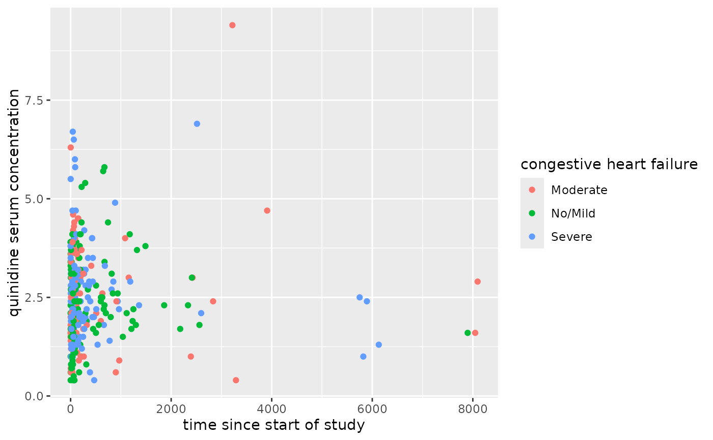
# If we resolve Heart, CHF levels are ordered.
x %>% resolve(Heart) %>% ggplot(map) + geom_point()
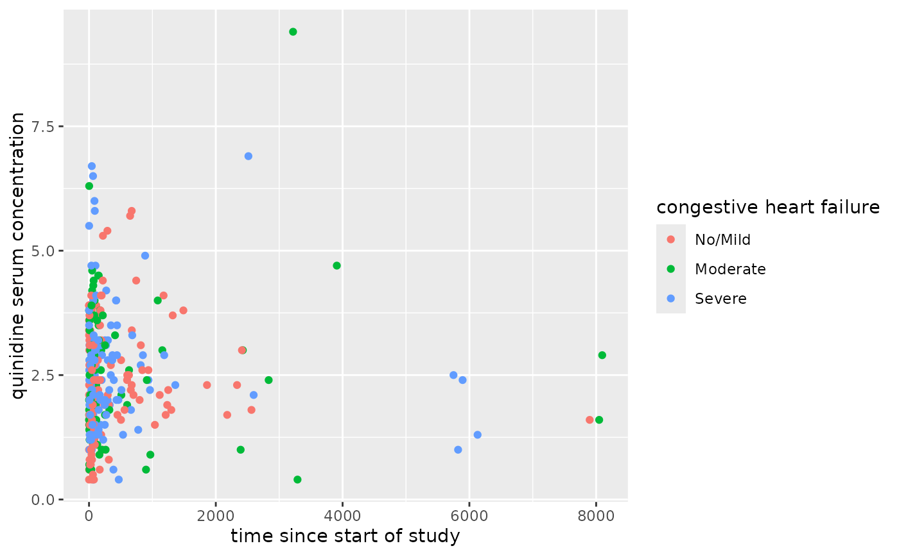
# We can map aesthetics as decorations.
x %>%
decorate('Heart: [ color: [gold, purple, green]]') %>%
ggplot(map) + geom_point()
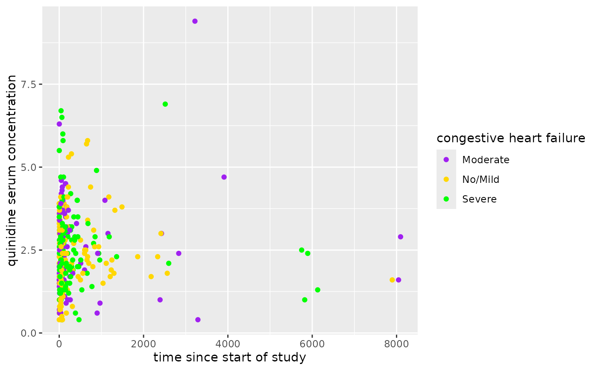
# Colors are matched to particular levels. Purple drops out here:
x %>%
decorate('Heart: [ color: [gold, purple, green]]') %>%
filter(Heart != 'Moderate') %>%
ggplot(map) + geom_point()
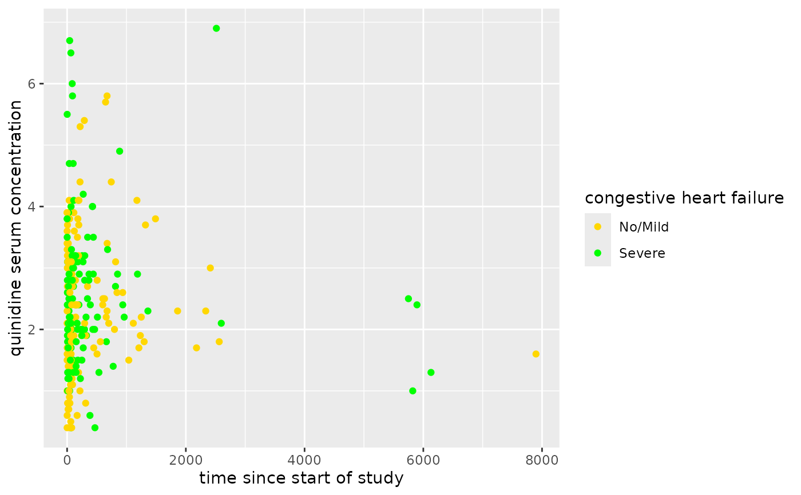
# We can resolve other columns for a chance to enrich the output with units.
x %>%
resolve %>%
ggplot(map) + geom_point()
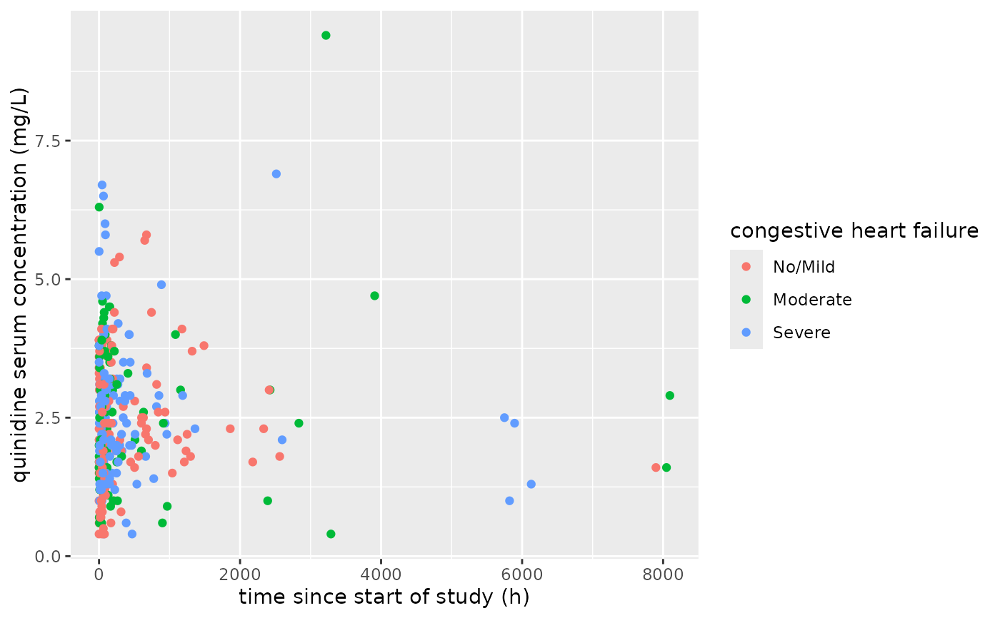
# Underscore and circumflex imply subscript and superscript:
x %>%
redecorate("conc: [ conc_serum, mg*L^-1 ]") %>%
ggplot(map) + geom_point()
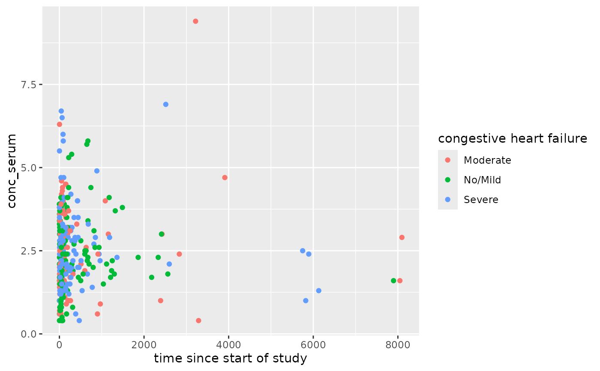
# If we invoke enscript(), the subscripts and superscripts are rendered:
x %>%
redecorate("conc: [ conc_serum, mg*L^-1 ]") %>%
redecorate("Heart: [ CHF^\\* ]") %>%
enscript %>%
ggplot(map) + geom_point()
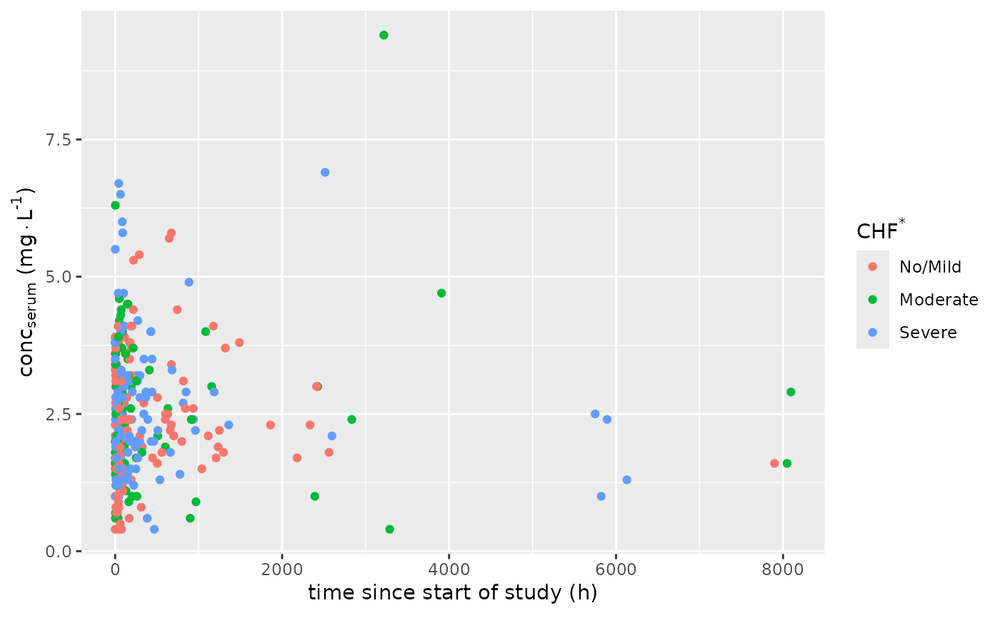
# Here we try a dataset with conditional labels and units.
file <- system.file(package = 'yamlet', 'extdata','phenobarb.csv')
x <- file %>% decorate %>% resolve
# Note that value has two elements for label, etc.
x %>% decorations(value)
#> - value
#> - label
#> - event == 'dose': dose of drug administered
#> - event == 'conc': serum phenobarbital concentration
#> - units
#> - event == 'dose': µg/kg
#> - event == 'conc': µg/L
#> - title
#> - event == 'dose': dose of drug administered (µg/kg)
#> - event == 'conc': serum phenobarbital concentration (µg/L)
# The print method defaults to the first, with warning.
map <- aes(x = time, y = value, color = event)
# \donttest{
x %>% ggplot(map) + geom_point()
#> Warning: using first of
#> (event == 'dose') dose of drug administered
#> (event == 'conc') serum phenobarbital concentration
#> Warning: using first of
#> (event == 'dose') dose of drug administered (µg/kg)
#> (event == 'conc') serum phenobarbital concentration (µg/L)
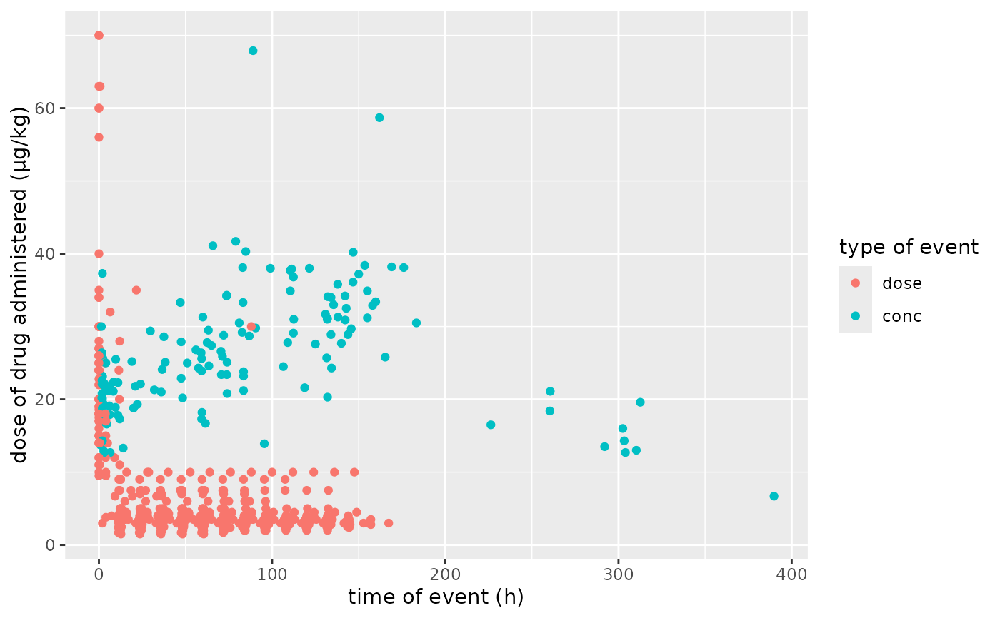
# }
# If we subset appropriately, the relevant value is substituted.
x %>% filter(event == 'conc') %>% ggplot(map) + geom_point()
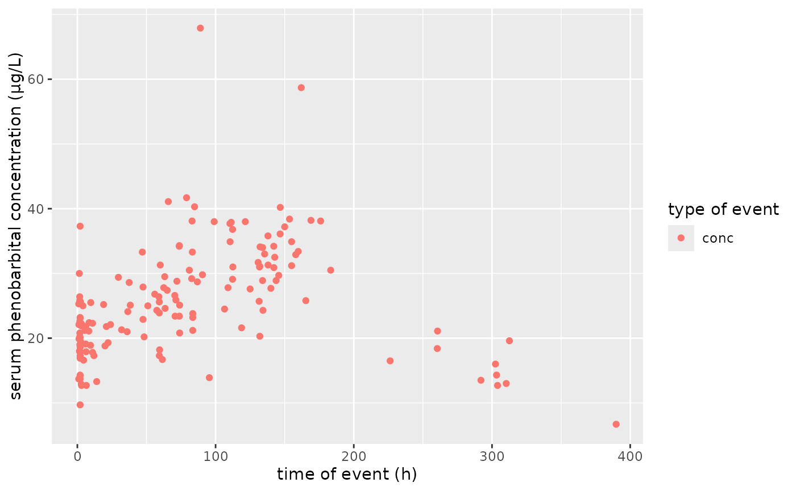
x %>% filter(event == 'conc') %>%
ggplot(aes(x = time, y = value, color = ApgarInd)) + geom_point()
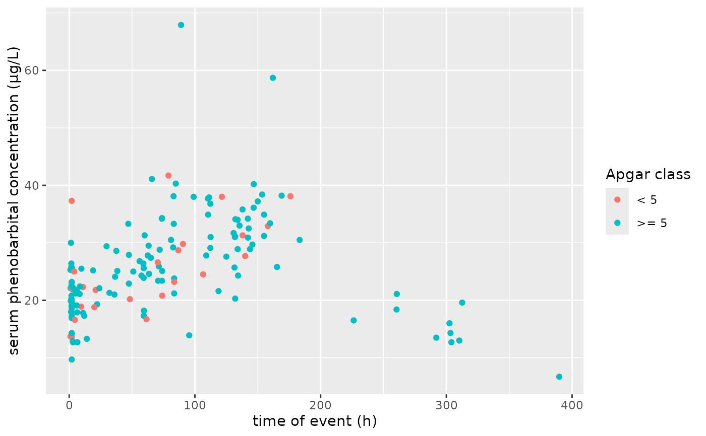
x %>% filter(event == 'dose') %>%
ggplot(aes(x = time, y = value, color = Wt)) +
geom_point() +
scale_y_log10() +
scale_color_gradientn(colours = rainbow(4))
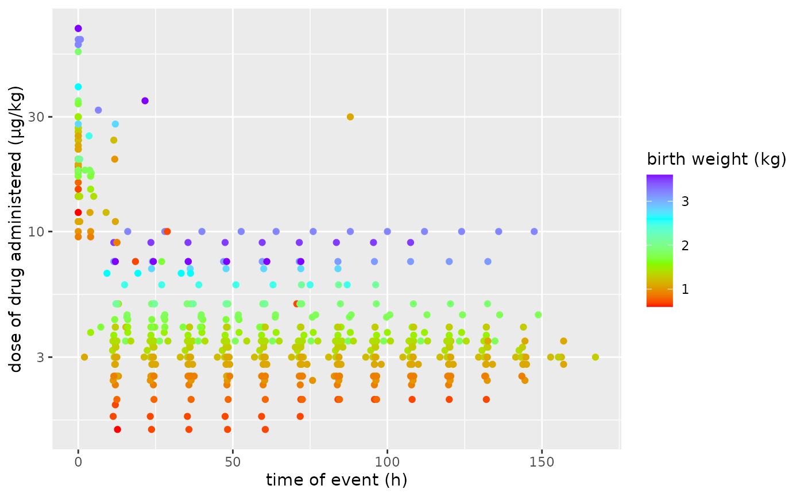
# ggplot_build.decorated_ggplot will attempt to honor coordinated aesthetics.
x <- data.frame(x = c(1:6, 3:8), y = c(1:6,1:6), z = letters[c(1:6,1:6)])
x %<>% decorate('z: [color: ["red", "blue", "green", "gold", "black", "magenta"]]')
x %<>% decorate('z: [fill: ["red", "blue", "green", "gold", "black", "magenta"]]')
x %<>% decorate('z: [shape: [20, 21, 22, 23, 24, 25]]')
x %<>% decorate('z: [linetype: [6, 5, 4, 3, 2, 1]]')
x %<>% decorate('z: [alpha: [ .9, .8, .7, .6, .5, .4]]')
x %<>% decorate('z: [size: [1, 1.5, 2, 2.5, 3, 3.5]]')
x %>% ggplot(aes(
x, y,
color = z,
fill = z,
shape = z,
linetype = z,
alpha = z,
size = z,
)) +
geom_point() +
geom_line(size = 1)
#> Warning: Using `size` aesthetic for lines was deprecated in ggplot2 3.4.0.
#> ℹ Please use `linewidth` instead.
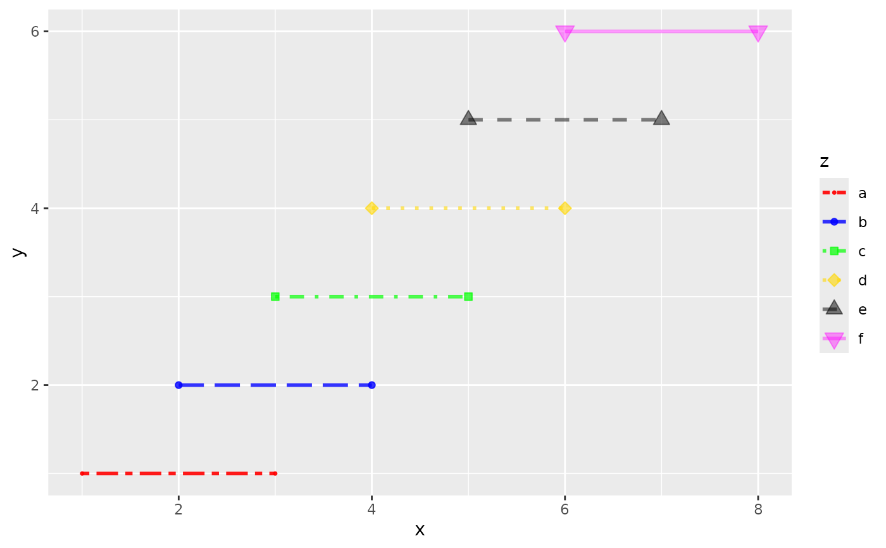